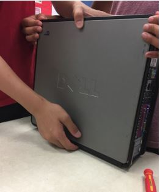
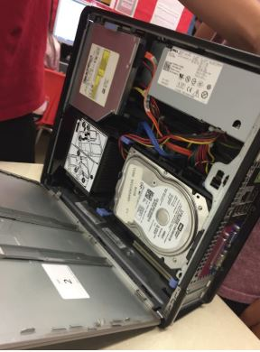
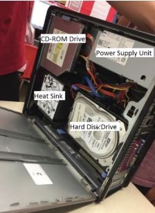

The events recorded here are apart of a system unit recovered among the heaps of evidence recovered in order to inspect it's contents and to match the serial number to a potential suspect.
The team first consulted manuals and expert engineers from Dell to learn to fully disassemble the system unit in order to match its contents with that of a system unit belonging to the suspects. Dell sent the team the thousands of serial numbers from the sales over the past 5 years of the same model system units, the Dell OptiPlex 755 - Core 2 Duo, with the respective customer information. The team set out right away to disassemble the system units in order to match the parts inside to those of the suspects.
On the first day, the team carefully took off the top cover of the system unit revealing the hardware inside the system unit. The team then left for the day as their shift was over.
The team started to identify the visible parts they could see inside the system unit and started to plan how they would start disassembling the system unit.

The team started by taking out the hard disk drive by unscrewing necessary screws and disconnecting cables from the hard drive.
The team started to disconnect all the visible cables on the motherboard.

The team then went home as their job was finished for the day.
The team started by taking out the CD-ROM Drive which wasn’t held in by any screws just a latch. The team disconnected all cables connecting to the CD-ROM Drive.
The team then unscrewed the screws holding the heat sink and fan in place and disconnected all the cables connecting to them.


The power supply unit was then taken out by unscrewing screws that attached it to the system unit.

The team unscrewed the screws that connected the motherboard to the inside shell of the system unit to take out the motherboard. The team then took out the RAM from the slots on the motherboard.

This left the team with just the I/O panel to remove from the system unit but their shift was over for the day so they went home.

The team took out the I/O panel by removing the screw that was connecting it to the system unit and took it out.

The team then laid out all the parts on the table and identified each part and it’s serial numbers.

The team searched for the serial numbers through the database and found out that this system unit was bought by James Cornell in 2015 from Dell. The team reported this information to the FBI. The team, now done with their work, headed back home.
The FBI had apprehended the suspect on December 3, 2017 and brought him into questioning. The suspect was caught while trying to pass through the border in Niagara Falls because he wanted to get away before he became a wanted criminal. He was found wearing a aluminum necklace which contained a slip of paper reading “5h8smwp0bbxu1jwn8”. James Cornell was then placed in a holding cell for further questioning at a later date.
The FBI contacted detectives Ricky and Jason Zhu, Andrew Yang, Christian Canlas, and Isaac Li and wanted them to reassemble the system unit to see what data is held inside the computer. The detectives agreed to the assignment and sought to reassemble the system unit that very day.
The team started at around 1:30 pm working to reassemble the system unit. The team first put back the I/O panel and the motherboard and screwed back the screws in their respective places. The team then placed the RAM cards into their slots on the motherboard.

The team then placed the fan and heat sink into the system unit and plugged all the cables into their corresponding slots on the motherboard. The screws were then screwed back in to secure the heat sink to the system unit.

The team, having finished their shift, went home.
The team placed the CD-ROM Drive back in by lifting the latch and sliding it into place. The team then plugged in all the cables back into their respective places on the motherboard. The team placed the Power Supply Unit back into place and screwed in the screws that held it to the system unit.

The team then put the Hard Disk Drive back into place and screwed in the screws holding it in place. All the cables were plugged into their respective places.

The cover of the system unit was then put on and the team set out to test the computer.

The team booted the computer and found out it was protected by a password. They consulted the FBI and told them they have completed their task. The FBI thanked them and payed them their reward for the assignment. The detectives went home after successfully disassembling and reassembling the system unit.